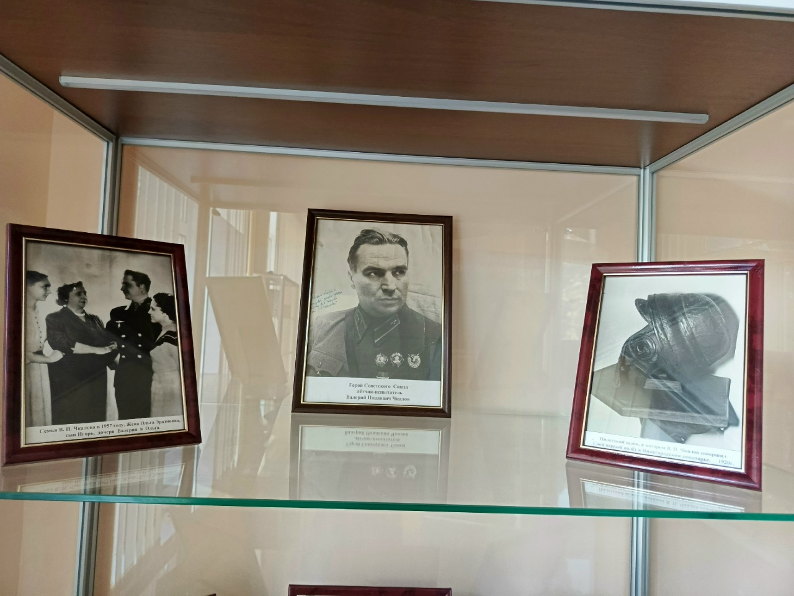
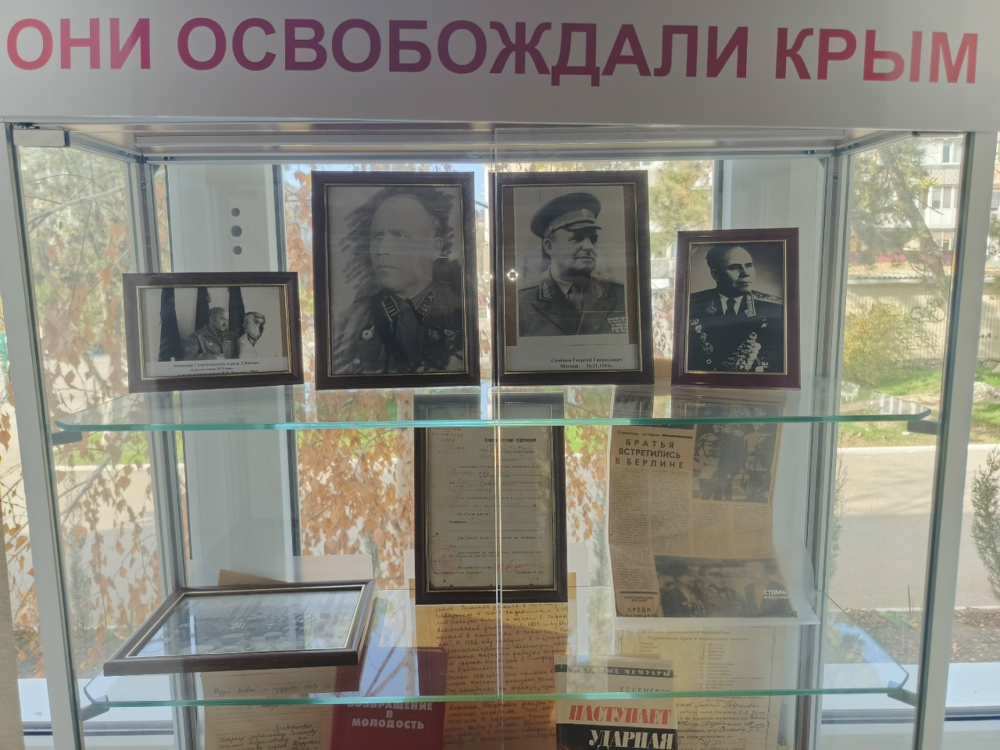
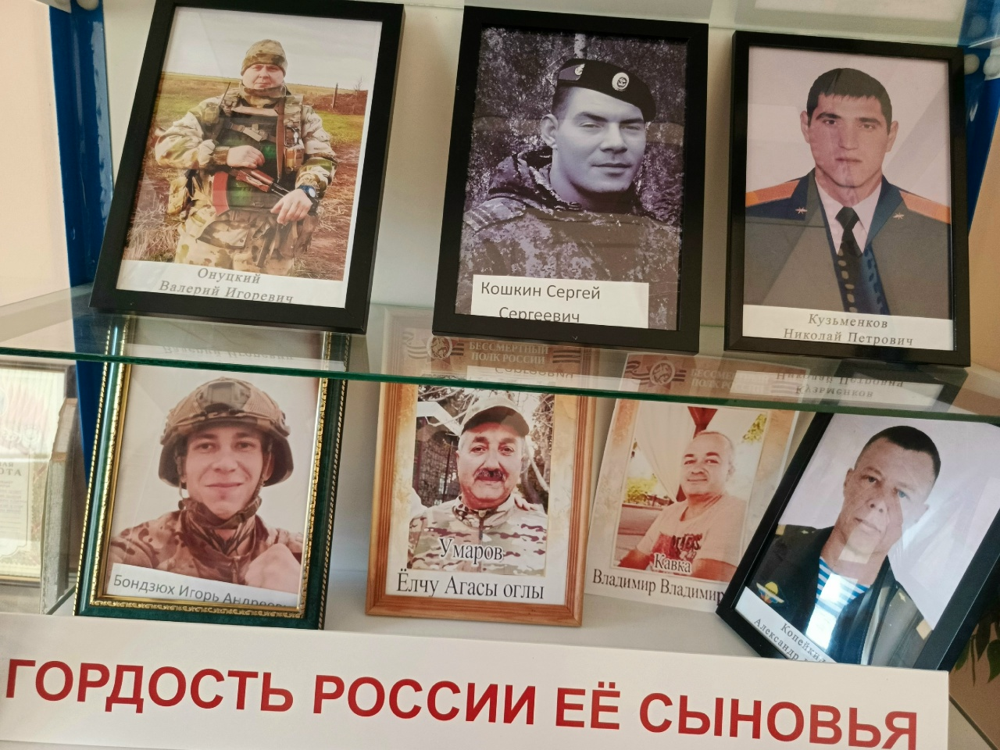
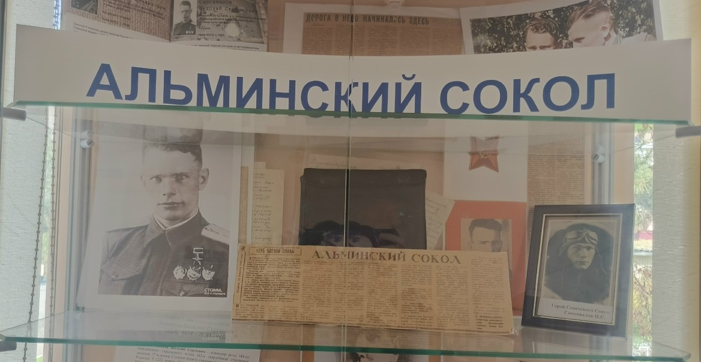

Эта страничка посвещена выдающимся людям Крыма
На этой странице вы можете увидеть Героев СССР и России выросших в Крыму

Герой советского союза Чкалов В.П лётчик-испытатель
В нашем школьнем музее есть целый стенд посвещенный одному из Героев Советского союза а имеено В.П. Чкалову

Стенд посвещенный участникам Крымской Наступательной операции
У нас есть стенд посвещенный Героем Освободившим Крым от Немцев

Стенд посвещенный Героям России
В музее так-же есть стенд Героев нашего времени

Герой Советского Союза Самохвалов Н.С
В нашем школьном музее так-же есть стенд о Самохвалове Н.С
Теперь кратко расскажем о Самохвалове Н.С и о Чкалове В.П и о Крымской Наступательной операции
Чкалов В.П
Родился в селе Василёва Слобода Нижегородской губернии (ныне город Чкаловск Нижегородской области)
В 1919 году в 15 лет Чкалов впервые увидел самолёт и, загоревшись мечтой об авиации, по предложению односельчанина
Владимира Фролищева, который работал бригадиром по сборке самолётов в 4-м Канавинском авиационном парке, уехал в
Нижний Новгород, По его совету Валерий в возрасте 15 лет вступил добровольцем в ряды Красной армии и начал работать
учеником слесаря-сборщика самолётов в этом авиапарке.
Перелёт экипажа Чкалова из Москвы на Дальний Восток стартовал 20 июля 1936 года и продолжался 56 часов до посадки на песчаной
косе острова Удд в Охотском море.
Общая протяжённость маршрута составила 9375 километров.
Самохвалов Н.С
Родился в русской крестьянской семье. Окончил 6 классов и аэроклуб. Работал слесарем
на мотороремонтном заводе в Симферополе.
В 1939 году призван в Красную Армию. В 1940 году окончил Качинское военное
авиационное училище лётчиков.
Указом Президиума Верховного Совета СССР от 28 апреля 1943 года за образцовое
выполнение боевых заданий командования на фронте борьбы с немецко-фашистским
захватчиками и проявленные при этом мужество и героизм старшему лейтенанту
Самохвалову Николаю Степановичу присвоено звание Героя Советского Союза с
вручением ордена Ленина и медали «Золотая Звезда» (№ 935).
Крымская наступательная операция
Крымская наступательная операция — операция советских войск с целью освобождения Крыма от войск нацистской
Германии во время Великой Отечественной войны. Проводилась с 8 апреля по 12 мая 1944 года силами 4-го
Украинского фронта и Отдельной Приморской армии во взаимодействии с Черноморским флотом и Азовской военной
флотилией. Результатами операции стали полный разгром 17-й армии вермахта и полное освобождение Крымского
полуострова. Был ликвидирован крупный плацдарм противника, угрожавший действиям находящихся на Украине
советских войск и освобождена главная база Черноморского флота – Севастополь.